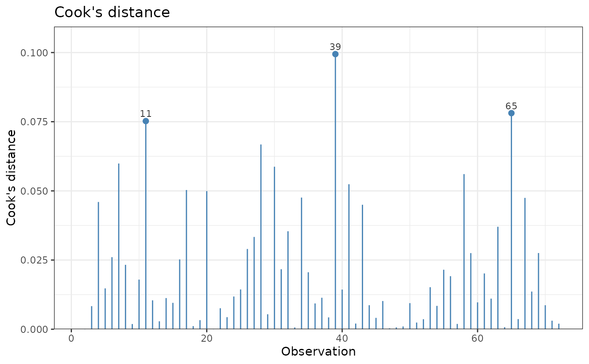
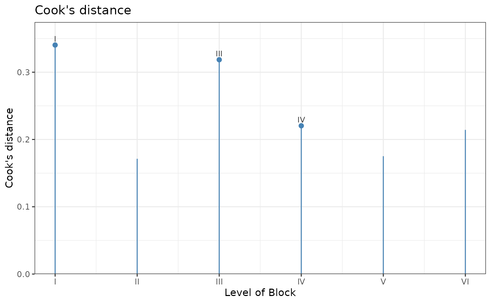

Cook's distances of the observations (or groups of observations) of a model fitted by aov, lm,
glm, gls, lme, lmer, glmer, glmmTMB or mgcv::gam, with a plot.
Arguments
- model
Model object returned by
aov(withoutError()),lm,glm,gls,lme,lmer,glmer,glmmTMBorgam.- group
Optional name (in "quotes") of a variable whose levels are deleted one at a time (e.g. the clusters of a mixed model); the default
NULLdeletes single observations.- plot
TRUE(the default): draw the distances (ggplot2, as the Cook's distance panel ofresidplot).- id
The number of the largest Cook's distances labelled in the plot (
idnbefore 2.0, now as inresidplot). The default value is 3.- ...
Not used:
idn,newwd(before 2.0) stop with their 2.0 spelling.
Details
Cook's distance of an observation (or of a group of observations, group) is
\(D = (\hat\beta - \hat\beta_{(-i)})' V^{-1} (\hat\beta - \hat\beta_{(-i)}) / p\), where
\(\hat\beta_{(-i)}\) are the fixed effects of the model refitted without it, \(V\) the covariance of
\(\hat\beta\) and \(p\) their number (for a gam, the effective degrees of freedom, as
mgcv's cooks.distance(); the smoothing parameters are re-estimated for each deletion). For lm and aov models and single observations this is
the exact closed form of stats::cooks.distance(). Other models are refitted for each deletion: exact also
for glm (stats::cooks.distance() for a glm is a one-step approximation), and for
mixed models and gls fitted by maximum likelihood (the REML criterion changes with the fixed effects).
A deletion that leaves a coefficient without data gives NA. Refitting a generalized linear mixed model
for every observation takes time; group deletes whole clusters, usually the more useful check for
mixed models.
Examples
library(predictmeans)
Oats$nitro <- factor(Oats$nitro)
fm <- lme(yield ~ nitro*Variety, random=~1|Block/Variety, data=Oats)
CookD(fm)

CookD(fm, group = "Block") # delete whole blocks
